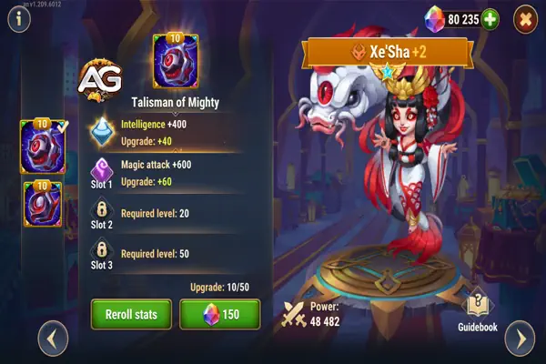
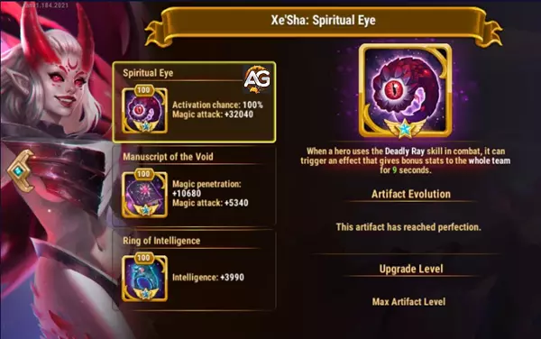
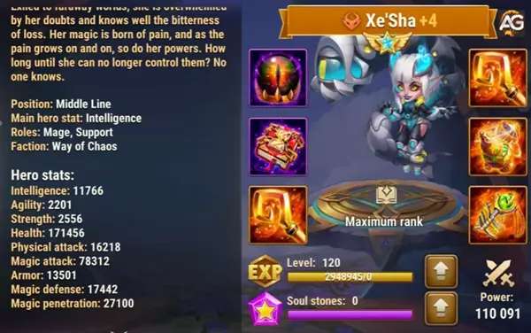

Dominando Xe'Sha: Um Guia Abrangente em Hero Wars Alliance
- Por: Alexandre Domingos. .
No reino do Caos, onde batalhas são vencidas e perdidas a cada movimento, Xe'Sha surge como uma heroína formidável, capaz de mudar o rumo até mesmo dos encontros mais difíceis. Com seu conjunto único de habilidades e sinergias, Xe'Sha é uma peça fundamental em equipes de fim de jogo, empunhando um poder imenso que pode esmagar os adversários.
Neste guia, exploraremos as estratégias e táticas para liberar todo o potencial de Xe'Sha no campo de batalha. Aprenda a maximizar seu poder com os Talismãs do Poderoso e do Exílio, explorando sinergias estratégicas dentro da facção do Caos para dominar o campo de batalha.
Desvendando Xe'Sha: Visão Geral do Herói e Tier List Geral
| Atributo | Valor |
|---|---|
| Posição: | Linha do meio |
| Função: | Suporte |
| Estatística Principal: | Inteligência |
| Facção: | Caos |
| Como obter Pedras de Alma: | Eventos, Baú Heróico |
| Lista | Nível |
|---|---|
| Tier List Geral: | A+ |
| Tier List de Hidra: | S+ |

Entendendo as Habilidades de Xe'Sha
Antes de adentrar nas estratégias, é crucial compreender as complexidades das habilidades de Xe'Sha:
-
Raio Mortal (1ª Habilidade):
- Xe'Sha drena uma porcentagem da saúde máxima dos aliados com mais de 25% de saúde, então ataca o inimigo com a menor defesa mágica.
- O dano causado depende tanto do dano causado aos aliados quanto do ataque mágico de Xe'Sha.
- Se o alvo for derrotado, os aliados recuperam o dobro da saúde perdida.
- Ataques básicos causam dano mágico escalonado com Ataque Mágico.
-
Poder Espiritual (2ª Habilidade):
- Xe'Sha capacita os aliados, causando dano a eles se sua saúde atual estiver acima de 25%.
- Heróis capacitados ganham um bônus de Ataque Mágico por uma duração, dobrado para heróis do Caos.
-
Névoa Carmesim (3ª Habilidade):
- Xe'Sha envolve o campo de batalha, fazendo com que os ataques básicos inimigos errem por uma duração limitada.
-
Poder Ascendente (4ª Habilidade):
- Xe'Sha ganha um bônus permanente de ataque mágico sempre que um aliado perde saúde de habilidades aliadas.
Estratégias para Dominar Xe'Sha
- Sinergia com Heróis de Palavra-chave Sacrifício:
Xe'Sha se destaca quando combinada com heróis da facção do Caos que possuem a palavra-chave Sacrifício. Suas habilidades se complementam bem com o sacrifício de aliados, amplificando seu potencial de dano e fornecendo sustentação para a equipe.
- Alvejar Inimigos com Baixa Defesa Mágica:
Usar a habilidade Raio Mortal para alvejar inimigos com a menor defesa mágica é crucial. Priorize oponentes vulneráveis a dano mágico para maximizar a eficácia.
- Capacitar Heróis da Facção do Caos:
Utilize o Poder Espiritual para capacitar heróis do Caos, aproveitando o bônus de Ataque Mágico dobrado. Isso amplifica significativamente a produção de dano deles, especialmente em momentos cruciais de batalha.
- Temporizar Névoa Carmesim para Manobras Defensivas:
A Névoa Carmesim pode mudar o jogo quando temporizada corretamente. Use-a para mitigar o dano recebido de ataques básicos inimigos, proporcionando uma oportunidade para sua equipe contra-atacar.
- Aproveitar o Bônus de Poder Ascendente:
Posicione aliados para acionar efetivamente o bônus de Poder Ascendente. O bônus permanente de ataque mágico adquirido pode aumentar exponencialmente o potencial de dano de Xe'Sha conforme a batalha avança.
Guia dos Talismãs da Xe'Sha
Xe'Sha empunha dois poderosos talismãs em Hero Wars Alliance: o Talismã do Poderoso e o Talismã do Exílio. Cada um oferece vantagens distintas, mas entender suas características únicas e sinergias pode ajudá-lo a otimizar seu desempenho em diferentes situações.
Talismã do Poderoso - Amplificando o Poder Mágico
O Talismã do Poderoso aumenta significativamente o poder mágico de Xe'Sha, fornecendo a ela:
- +2.000 Inteligência
- +19.800 Ataque Mágico (dividido em três slots)

Este talismã melhora suas capacidades ofensivas, tornando sua habilidade Ultimate particularmente potente. O aumento do poder de ataque mágico permite que Xe'Sha cause danos substanciais, tornando-a uma força formidável no campo de batalha. Além disso, cada ponto de inteligência concede ataque mágico adicional, defesa mágica e ataque físico, melhorando seu desempenho geral. Este talismã é especialmente útil para maximizar o dano causado por Xe'Sha.
Talismã do Exílio - Aumentando a Resiliência e Penetração
Por outro lado, o Talismã do Exílio oferece um conjunto diferente de melhorias:
- +12.000 Armadura
- +19.800 Penetração Mágica (dividido em três slots)

Este talismã é particularmente eficaz para aumentar a resiliência de Xe'Sha contra dano físico, ao mesmo tempo que melhora sua capacidade de superar as defesas mágicas inimigas. O aumento na armadura ajuda a resistir a ataques físicos, tornando-a mais resistente contra equipes focadas em dano físico. Mais importante ainda, o aumento na penetração mágica permite que Xe'Sha cause dano mais efetivo a inimigos com alta defesa mágica.
Sinergia Estratégica com a Facção do Caos
O verdadeiro poder do Talismã do Exílio se destaca quando Xe'Sha é usada em uma equipe da facção do Caos. Sua habilidade de ganhar um bônus de 25% de ataque mágico para cada ponto de HP perdido por um aliado combina excepcionalmente bem com heróis como Aidan, Lilith, Cleaver e Dorian, que frequentemente sacrificam seus próprios HP ou os de seus aliados. Aidan, por exemplo, sacrifica o HP dos heróis do Caos, e essa perda se traduz diretamente em um aumento significativo no ataque mágico de Xe'Sha, eliminando a necessidade de ela começar com estatísticas de ataque mágico elevadas. O Talismã do Exílio, com sua penetração mágica, aumenta o dano de Xe'Sha, tornando-a devastadora em batalha.
Escolhendo o Melhor Talismã para Xe'Sha
Embora o Talismã do Poderoso ofereça aumentos substanciais no ataque mágico, o Talismã do Exílio proporciona uma utilidade geral melhor. A combinação de armadura e penetração mágica não só torna Xe'Sha mais durável contra ameaças físicas, mas também permite que ela cause danos mais consistentes a inimigos com altas defesas mágicas. Isso faz do Talismã do Exílio a escolha superior em muitas situações, especialmente ao enfrentar hidras ou outros inimigos com alta defesa.
O Talismã do Exílio se destaca como a melhor opção para Xe'Sha, oferecendo uma mistura equilibrada de defesa e penetração mágica ofensiva, tornando-a um recurso mais versátil e poderoso em qualquer equipe, especialmente dentro da facção do Caos.
Pontos Positivos e Negativos de Xe'sha
Pontos Positivos
- Causa dano OverPower aos inimigos
- Causa muito dano às Hidras
Pontos Negativos
- Depende de aliados da facção Caos com a palavra-chave Sacrifício nas habilidades para obter dano extra OverPower
Prioridade na Evolução de Xe'sha
Prioridade de Glifos
| Tipo de Glifo | Prioridade |
|---|---|
| Perfuração Mágica | Alta |
| Vida | Média |
| Ataque Mágico | Alta |
| Inteligência | Alta |
| Defesa Mágica | Média |
Prioridade de Artefatos
| Tipo de Artefato | Prioridade |
|---|---|
| Livro | Alta |
| Arma - Ataque Mágico | Alta |
| Anel | Média |

Prioridade de Skins
| Tipo de Skin | Prioridade |
|---|---|
| Ataque Mágico (Super Skin+) | Muito Alta |
| Penetração Mágica | Muito Alta |
| Chance de Acerto Crítico Mágico (Skin Solar) | Alta |
| Inteligência | Alta |
| Vida (Profundezas Sombrias) | Média |
| Armadura | Baixa |

Xe'Sha vs Hidra
Como você pode ter notado, Xe'Sha é uma grande personagem contra as hidras mágicas. Sua destreza em batalha permite que ela enfrente esses formidáveis inimigos com confiança, muitas vezes emergindo vitoriosa com apenas uma tentativa. Isso não apenas mostra sua força, mas também prova ser inestimável ao ajudar no crescimento de sua guilda. Cada encontro triunfante com uma hidra traz não apenas glória, mas também recursos valiosos e reconhecimento dentro do reino.
Para garantir o sucesso de Xe'Sha contra hidras mágicas, montar a equipe certa é crucial. Aqui está uma formação recomendada:
- Equipe de Xe'Sha contra Hidras Mágicas: Martha, Aidan, Faceless, Xe'Sha, Mushroom e Melium (Dano: 220M)
Cada membro dessa equipe contribui com suas habilidades únicas para complementar as forças de Xe'Sha, resultando em uma força formidável capaz de enfrentar qualquer hidra mágica que cruze seu caminho. Com determinação e planejamento estratégico, a vitória está ao alcance.
Xe'Sha em Batalhas
Forte Contra
- Keira - Daredevil - Dante - K`arkh - Cornelius - Celeste
Melhores Contra-Ataques de Xe'Sha
| Contra-Ataques | O que acontece |
|---|---|
| Rufus é imortal contra dano mágico, e sua primeira habilidade, Barreira Rakashi, cria um escudo que absorve todo o dano mágico recebido por seus aliados. Dessa forma, Xe'Sha não pode eliminar ninguém protegido pelo escudo de Rufus. | |
| Se Xe'Sha é a inimiga com mais inteligência, quando Cornelius ataca com o ultimate, ele causará muito dano físico com um enorme monólito. Além disso, Cornelius cria um escudo que aumenta a defesa mágica para todos os aliados. | |
| Se Xe'Sha é a inimiga com o maior ataque mágico, quando Phobos usa sua terceira habilidade, Dark Binds, ele se conectará a ela e transferirá toda a energia ganha para ele por 10 segundos. Dessa forma, Xe'Sha não poderá usar seu Ultimate. |


Construindo a Equipe Definitiva de Xe'Sha
Para aproveitar todo o potencial de Xe'Sha, considere a seguinte composição de equipe:
- Heróis da Facção Caos: Priorize a inclusão de heróis do Caos com palavras-chave de Sacrifício para maximizar a sinergia.
- Heróis de Suporte: Inclua heróis de suporte que complementem as habilidades de Xe'Sha, fornecendo utilidade adicional e sustentação para a equipe.
- Caçadores de Danos: Suplemente a produção de dano de Xe'Sha com outros heróis de alto dano para pressionar efetivamente os oponentes.
Melhores Equipes de Xe'Sha
| Composição da Equipe | Heróis |
|---|---|
| Equipe 1 | Lilith, Aidan, Dorian, Xe'Sha, Astaroth |
| Equipe 2 | Aidan, Dorian, Xe'Sha, Jorgen, Astaroth |
| Equipe 3 | Lilith, Aidan, Xe'Sha, Kayla, Astaroth |
| Equipe 4 | Aidan, Xe'Sha, Judge, Kayla, Hatchet |
| Equipe 5 | Aidan, Xe'Sha, Nebula, Kayla, Cleaver |
| Equipe 6 | Aidan, Dorian, Xe'Sha, Kayla, Cleaver |
| Equipe 7 | Aidan, Peppy, Xe'Sha, Kayla, Cleaver |
| Equipe 8 | Lilith, Dorian, Xe'Sha, Jorgen, Astaroth |
| Equipe 9 | Lilith, Peppy, Dorian, Xe'Sha, Cleaver |
| Equipe 10 | Lilith, Dorian, Xe'Sha, Jorgen, Cleaver |
| Equipe 11 | Lilith, Dorian, Xe'Sha, Astaroth, Cleaver |
| Equipe 12 | Dorian, Lars, Xe'Sha, Krista, Astaroth |
Investindo em Xe'Sha: Uma Decisão Digna de Sua Guilda
Ao concluirmos, fica claro que Xe'Sha se destaca como um farol de força dentro da facção Caos, capaz de redefinir o curso das batalhas com suas habilidades incomparáveis e sinergia. Aprofundar-se nas complexidades de suas habilidades e cultivar uma dinâmica de equipe harmoniosa ao seu redor é um investimento que promete retornos substanciais para sua guilda.
Ao dedicar recursos e esforços para dominar as habilidades de Xe'Sha, você não apenas fortalece sua formação, mas também traça um caminho rumo à dominação no campo de batalha. Através de um planejamento estratégico meticuloso e uma execução impecável, deixe Xe'Sha liderar sua guilda rumo à vitória, estabelecendo-a como a pedra angular de seus triunfos.
Sugestões de Vídeo:
Você pode ter interesse:
 Aidan
Aidan Dorian
Dorian Lilith
LilithDeixe Sua Opinião!
Você gostou do nosso Guia da Xe'Sha? Há algo que não entendeu ou gostaria de sugerir mudanças? Convidamos você a se juntar à nossa sessão de comentários na página do Alexandre Games Blog. Não hesite em expressar sua opinião, clarificar suas dúvidas e compartilhar sua sugestões.
Clique no botão abaixo para começar: